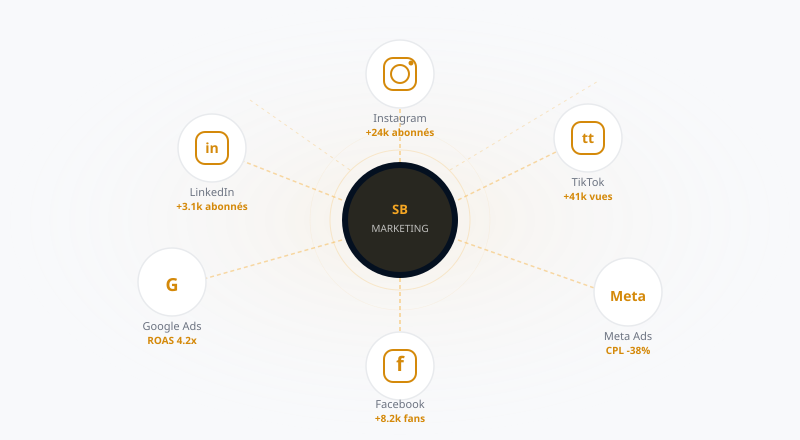
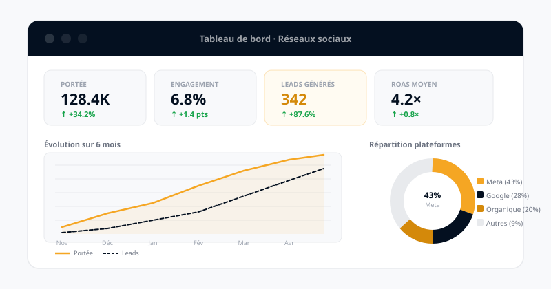

Pourquoi les réseaux sociaux sont devenus incontournables pour votre PME
En 2026, plus de 5,2 milliards de personnes utilisent les réseaux sociaux dans le monde. En France, c'est 84 % de la population qui est active sur au moins une plateforme. Pour les PME, ignorer ce canal, c'est abandonner le terrain à ses concurrents.
Mais la simple présence ne suffit plus. Ce qui fait la différence aujourd'hui, c'est la gestion stratégique et cohérente de ces plateformes. Entre la création de contenu, la gestion des interactions, l'analyse des données et le pilotage des campagnes payantes, une présence efficace sur les réseaux demande une expertise à plein temps.
1. Construire une image de marque forte et mémorable
La première mission des réseaux sociaux n'est pas de vendre directement — c'est de créer de la confiance. Un profil professionnel, cohérent visuellement et actif régulièrement envoie un signal fort : cette entreprise est sérieuse, crédible, et elle dure.
La cohérence visuelle comme levier de reconnaissance
Vos prospects voient en moyenne 7 touchpoints avant de devenir clients. Chaque post, chaque story, chaque vidéo est une opportunité de renforcer votre identité. Une charte graphique respectée, un ton de voix constant et des thématiques ciblées construisent une marque reconnaissable en quelques secondes.
« Une entreprise qui publie de manière irrégulière ou incohérente perd en crédibilité ce qu'elle gagne en effort. La régularité bat l'intensité. »
Le contenu qui connecte, pas seulement qui informe
Les formats qui performent en 2026 ne sont plus les mêmes qu'il y a 3 ans. Les Reels Instagram, les vidéos courtes TikTok et les carrousels LinkedIn génèrent en moyenne 3 à 5× plus d'engagement que les posts statiques. La preuve sociale — témoignages clients, études de cas, coulisses — est le contenu le plus convaincant.
- Définir une identité visuelle cohérente sur toutes les plateformes
- Publier 4 à 5 fois par semaine avec un calendrier éditorial structuré
- Mixer les formats : vidéo courte, carrousel, texte, live
- Mettre en avant la preuve sociale (avis, témoignages, résultats chiffrés)
- Adapter le ton à chaque plateforme tout en gardant une voix unique
Vous voulez transformer vos réseaux en vrai levier commercial ?
Nous pouvons prendre en charge le contenu, les campagnes et l'optimisation pendant que vous pilotez votre activité.
Voir comment nous pouvons vous aider2. Générer des leads qualifiés grâce aux réseaux sociaux
Au-delà de l'image de marque, les réseaux sociaux sont devenus l'un des canaux les plus puissants pour la génération de leads à coût maîtrisé. Mais il ne s'agit pas de poster et d'espérer — il faut une stratégie d'entonnoir claire.

Meta Ads : ciblage ultra-précis pour un CPL réduit
Facebook et Instagram offrent le ciblage publicitaire le plus granulaire du marché. Avec les bonnes audiences — lookalike, retargeting, intérêts combinés — il est possible d'atteindre exactement votre client idéal. Nos campagnes atteignent régulièrement un coût par lead inférieur de 38 % à la moyenne du secteur.
LinkedIn pour la génération de leads B2B
Pour les entreprises BtoB, LinkedIn est indispensable. Les Lead Gen Forms natifs permettent de capturer des contacts qualifiés sans friction, directement depuis la plateforme. Le taux de conversion est 2 à 3× supérieur aux formulaires classiques sur site web.
L'organique comme amplificateur du paid
Une stratégie social media performante combine toujours contenu organique et publicité payante. Le contenu organique crée la confiance ; la publicité accélère la portée. Les entreprises qui combinent les deux voient leur coût d'acquisition réduire de 25 à 45 % versus une approche uniquement paid.
3. Créer une communauté engagée autour de votre marque
L'engagement n'est pas une vanité metric — c'est un signal de confiance et d'intention d'achat. Une communauté active partage votre contenu, répond à vos questions et recommande vos services. C'est votre meilleure équipe commerciale, bénévole.
Répondre, interagir, humaniser
Les algorithmes des réseaux sociaux favorisent les comptes qui créent des échanges. Répondre à chaque commentaire dans les 24 premières heures augmente la portée organique de 15 à 30 %. Au-delà de l'algorithme, c'est l'humanisation de votre marque qui convertit les abonnés en clients.
User Generated Content : vos clients, vos meilleurs ambassadeurs
Encourager vos clients à partager leurs expériences — via des hashtags dédiés, des concours ou simplement en leur demandant — crée un flux de contenu authentique que vous ne pouvez pas acheter. Le UGC génère en moyenne 6,9× plus d'engagement que les contenus de marque classiques.
4. Analyser les données pour optimiser en continu
Publier sans analyser, c'est conduire les yeux fermés. La puissance des réseaux sociaux vient de leurs tableaux de bord analytiques en temps réel : vous savez exactement ce qui fonctionne, pour qui, et quand.

Les KPIs qui comptent vraiment
Oubliez les likes — voici les métriques qui impactent réellement votre business :
- Taux d'engagement : clics, partages, commentaires / portée
- Coût par lead (CPL) : budget pub / nombre de leads générés
- ROAS : retour sur investissement publicitaire
- Taux de conversion : leads → clients
- Valeur vie client (LTV) : chiffre d'affaires généré par canal
- Part de voix : votre visibilité vs. concurrents sur votre marché
A/B testing et optimisation itérative
Les meilleures campagnes ne sont jamais finies — elles s'améliorent en permanence. Le test A/B systématique des visuels, des accroches, des CTA et des audiences permet de réduire le CPL de 20 à 50 % en quelques semaines.
5. Les erreurs courantes qui sabotent votre croissance
Après avoir accompagné des dizaines d'entreprises, voici les pièges les plus fréquents que nous observons :
❌ Publier sans stratégie ni calendrier
L'improvisation est l'ennemie de la cohérence. Sans calendrier éditorial, les publications deviennent irrégulières, les messages incohérents, et l'algorithme vous pénalise.
❌ Ignorer les données et ne jamais ajuster
Beaucoup d'entreprises publient le même type de contenu pendant des mois sans jamais regarder leurs statistiques. C'est comme répéter les mêmes erreurs en espérant des résultats différents.
❌ Traiter tous les réseaux de la même façon
Instagram n'est pas LinkedIn, qui n'est pas TikTok. Chaque plateforme a ses codes, ses formats et ses audiences. Copier-coller le même contenu partout est la recette de l'invisibilité.
❌ Négliger le service client sur les réseaux
69 % des utilisateurs qui contactent une marque via les réseaux sociaux attendent une réponse en moins d'une heure. Un message sans réponse coûte des clients.
❌ Tout faire soi-même
La gestion professionnelle des réseaux sociaux est un métier à part entière. Déléguer à une agence spécialisée permet de se concentrer sur son cœur de métier tout en bénéficiant d'une expertise et d'outils de pointe.
Conclusion : les réseaux sociaux, votre levier de croissance le plus sous-exploité
En 2026, la question n'est plus de savoir si votre entreprise doit être active sur les réseaux sociaux — elle l'est. La vraie question, c'est : est-ce que cette présence travaille vraiment pour vous ?
Une gestion stratégique des réseaux sociaux combine image de marque, génération de leads, engagement communautaire et optimisation data-driven. C'est un investissement qui se mesure en résultats concrets : plus de visibilité, plus de contacts qualifiés, plus de clients.
Chez Sb Marketing, nous pilotons la croissance digitale de nos clients à Nice et partout en France. Chaque stratégie est conçue sur-mesure, chaque campagne est optimisée en continu, chaque euro investi est justifié par des résultats mesurables.
Questions fréquentes
À quelle fréquence faut-il publier ?
La bonne fréquence dépend de votre audience et de vos ressources, mais la régularité compte davantage que les pics d'activité isolés.
Faut-il être présent sur tous les réseaux ?
Non. Il vaut mieux être excellent sur les plateformes où vos clients sont réellement actifs que moyen partout.
Les réseaux sociaux peuvent-ils vraiment générer des leads ?
Oui, surtout lorsqu'ils combinent contenu organique, preuves sociales et campagnes payantes orientées conversion.

Prêt à transformer vos réseaux sociaux en moteur de croissance ?
Discutons de votre projet lors d'un appel stratégique gratuit de 30 minutes. Nous analysons votre situation actuelle et vous proposons un plan d'action concret.
Parler à un expert — C'est gratuit